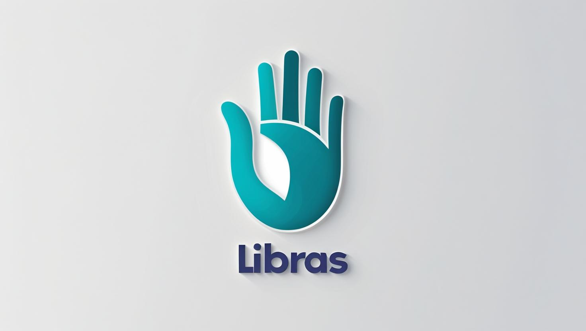

Novo Aplicativo de Comunicação em Libras ganha sucesso, sendo implementado em escolas públicas
Por Giovanni Oliveira, TecScope
Com o avanço do Novo Ensino Médio e a crescente valorização da formação profissional nas escolas públicas, o estado de São Paulo implementou oficialmente um novo aplicativo de comunicação em Libras — a Língua Brasileira de Sinais — como ferramenta de apoio à inclusão e qualificação dos estudantes. O aplicativo, vem ganhando reconhecimento nacional e se tornou um dos recursos mais utilizados por alunos e professores na rede estadual desde o início do ano letivo de 2025.

Desenvolvido por uma startup brasileira especializada em acessibilidade digital, o aplicativo permite a tradução simultânea de palavras e frases faladas ou escritas para Libras por meio de avatares animados e recursos interativos. Ele pode ser usado tanto offline quanto online, e já foi integrado a materiais pedagógicos, plataformas educacionais e atividades extracurriculares.
Além de auxiliar na comunicação com estudantes surdos, o app tem sido usado como recurso didático para alunos ouvintes que desejam aprender Libras como parte da formação profissional prevista no Novo Ensino Médio.
"A inclusão deixou de ser apenas um princípio: passou a ser prática", afirmou Fernanda Mello, coordenadora pedagógica da Diretoria de Ensino da Capital. "Com essa ferramenta, estamos preparando jovens para um mercado de trabalho mais diverso e humano."